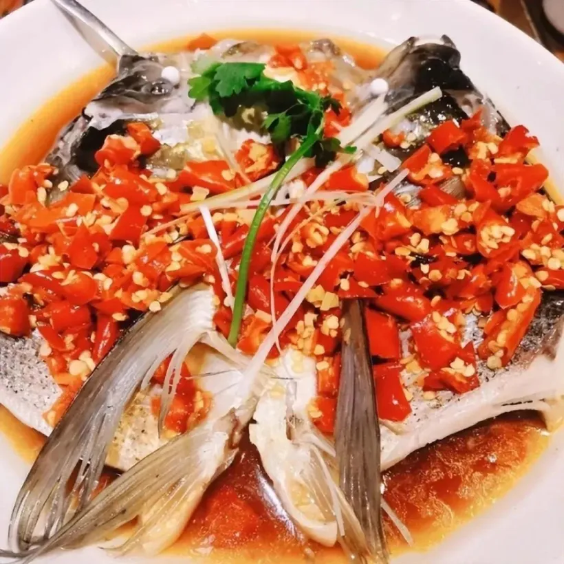
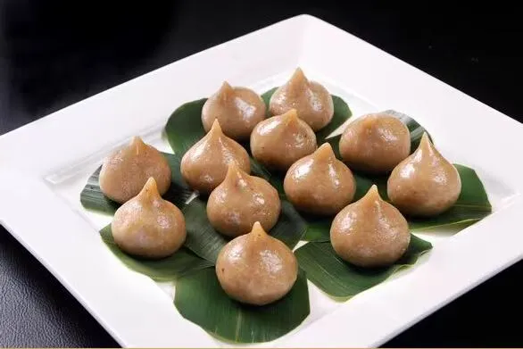
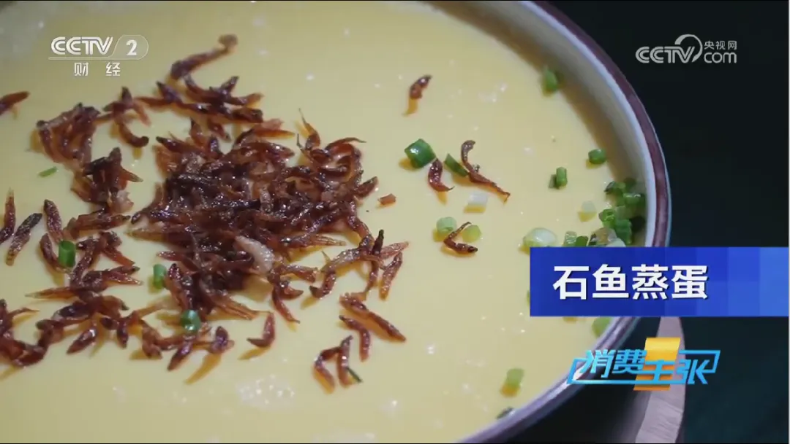
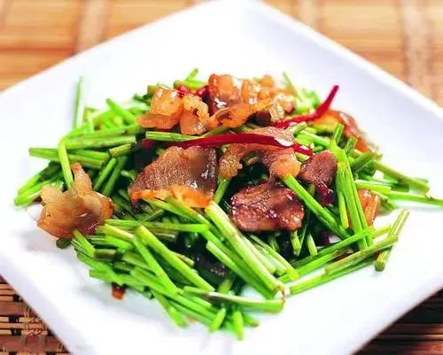
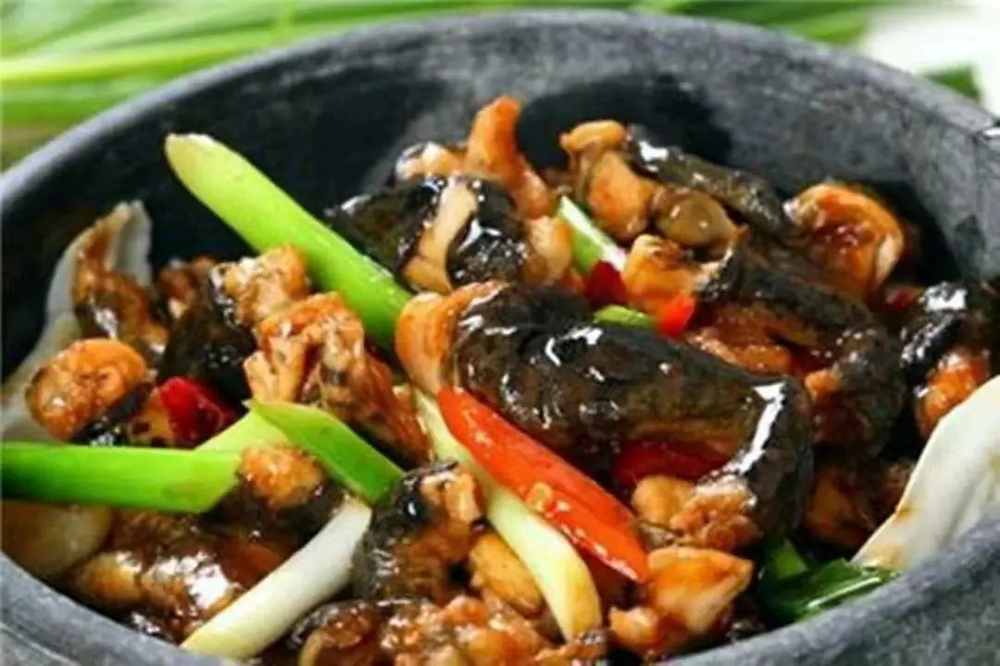
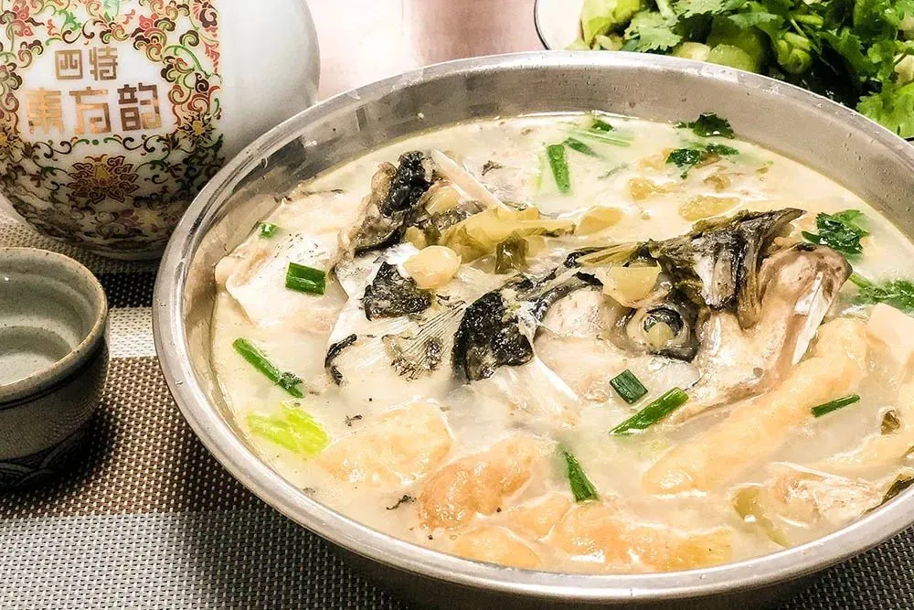
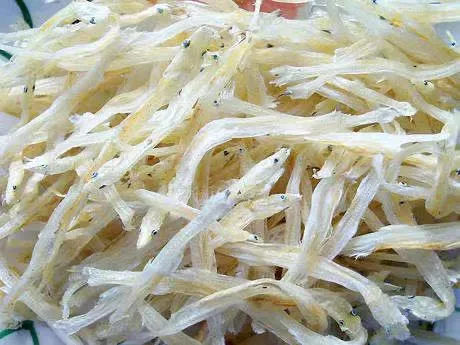
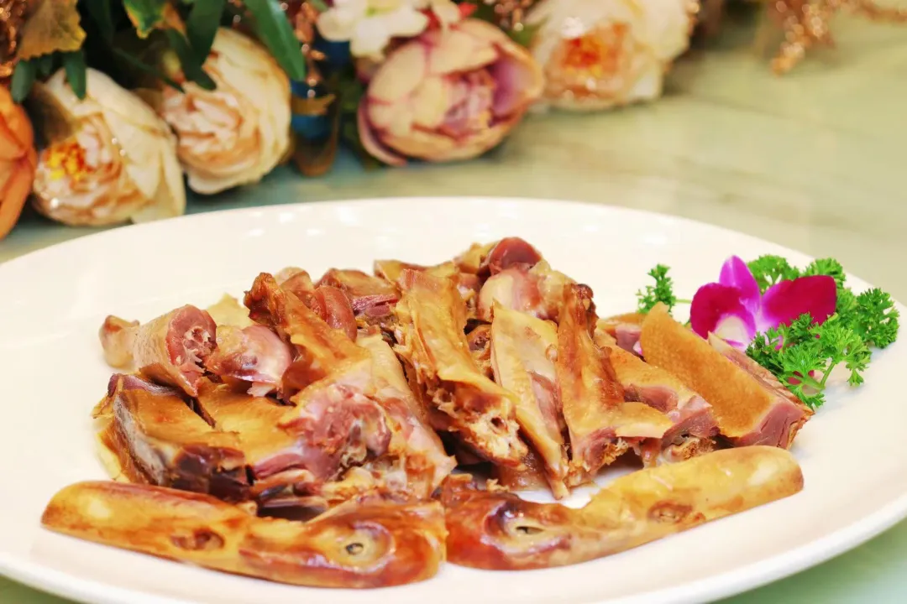
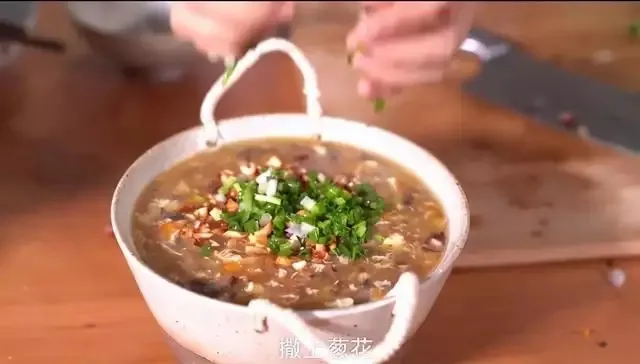

———— 九江饮食文化 ————
来九江必吃的十大美食有你的最爱吗？
九江炒粉
九江炒粉是一道特色江西小吃，起源于九江市。它以大米粉为主要原料，搭配丰富的配料，如肉丝、豆芽、葱花等，通过翻炒制作而成。味道鲜美，口感滑嫩，有一定的辣味，深受当地人和游客的喜爱。炒粉的调料多样，常使用酱油、醋、辣椒等，风味独特，是江西地方饮食文化的重要代表之一。

鄱湖胖鱼头
鄱湖胖鱼头可以做成多种吃法。最常见的是烧煮，将鱼头与配料一起煮熟，然后食用汤汁和鱼肉。另外，还可以做成红烧、酸菜炖等多种口味。不论如何制作，鄱湖胖鱼头都以其鲜美的口感和独特的味道深受人们的喜爱。每年，在鄱阳湖的渔民们会举办胖鱼头文化节，展示鄱湖胖鱼头的制作过程和各种吃法，吸引了众多游客前来品尝和观赏。来到江西旅游时，不要错过品尝这道独特的美食，它将给您带来难忘的味蕾享受。
修水哨子
修水哨子，是江西省九江市修水县一种特色地方传统名点。以境内高山特产山芋、西乡红薯粉为原料，馅以地方特色小料，依传统工艺精制而成，纯系天然，清香绵柔，营养丰富，入口即化。
庐山石鱼
庐山石鱼体色透明，无鳞，体长一般在30至40毫米左右，同绣花针长短差不多，就是长上七八年，长短也不超过一寸，故又名绣花针。石鱼长年生活在庐山的泉水与瀑布中，把巢筑在泉瀑流经的岩石缝里。其肉细嫩鲜美，味道香醇，闻名遐迩。石鱼不论炒、烩、炖、泡都可以，营养成分丰富，尤其是产妇难得的滋补品。
藜蒿炒腊肉
藜蒿炒腊肉，是中国江西省鄱阳湖沿岸一带传统风味名菜，为江西菜系。藜蒿炒腊肉主以藜蒿、腊肉等食材用料烹制，腊肉金黄，藜蒿青绿，脆嫩爽口，且有一股特别的清香味道。
庐山石鸡
庐山石鸡，蛙的一种，叫石蛙，是著名的庐山“三石”之一。庐山三石: 石耳、石鸡、石鱼。庐山石鸡是江西省九江市庐山区的首特色名菜，属赣菜系浔阳菜一支。庐山石鸡选用阴润岩壁洞穴中的蛙加辣椒等佐料精制而成。庐山石鸡具有“色泽深黄，肉质细嫩，香味浓郁，口味甚醇”的特点，深受民众喜爱。
豆参煮鱼头
豆参煮鱼头是鄱阳湖地区的特色菜，其“色、香、味、形”均为上品。一是豆参用大豆制成，长约三寸，色泽金黄，体形溜圆，清香可口，富含营养，可谓食中珍品。其独特的传统工艺加工的豆参，与众不同，皮薄，肉嫩，醇香，味美。“豆参”饱吸高汤浓汁，浑身水亮，一口咬下，热汤四溢，绵软如絮，鲜香满口，汤若羊脂，入口其鲜无比。
都昌鄱阳湖银鱼
都昌鄱阳湖银鱼是江西省九江市都昌县鄱阳湖的特产。都昌产银鱼历史悠久，明朝时列为地方贡品，曾荣获首届农业博览会金奖。鄱湖银鱼透明，头平扁，口大，牙锐，背鳍和脂鳍各一个，晒干后似雪白银条，故名“银鱼”。鄱湖银鱼肉美味鲜，营养丰富，有益脾、润肺、补肾、去虚、增阳、滋阴等功效，属上等滋养补品。
共青城板鸭
共青城板鸭以传统工艺为基础，对毛鸭选种育肥、腌制、加工、晾晒等技术进行了科学合理的改进，形成了共青板鸭独特的生产工艺，以其肉嫩、肥而不腻、骨脆、味鲜、香浓、咸而适中、营养丰富、驰名中外、素为腊味中的珍品，是馈赠、酒宴、家庭和茶席的佳品。
武宁什锦汤
武宁什锦汤是武宁县一种具有浓郁山乡风味的菜肴，味道鲜美，色彩斑斓，已列入武宁县“十大特色美食”。制作什锦汤利用生铁锅，以木柴加热，大火炒香，勾芡后利用灶膛的余温将什锦汤煮稠，在小火慢炖中各种食材的味道互相融合。同时它寓意团圆美满，是家乡人过年婚寿喜庆筵席上必备的一道头菜，是赣菜文化中不可或缺的一部分。
